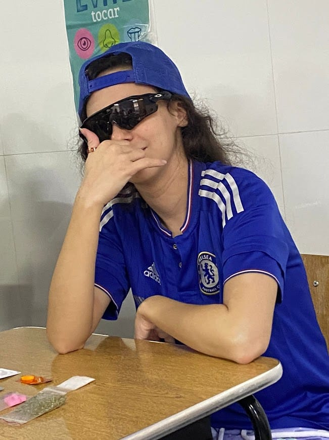
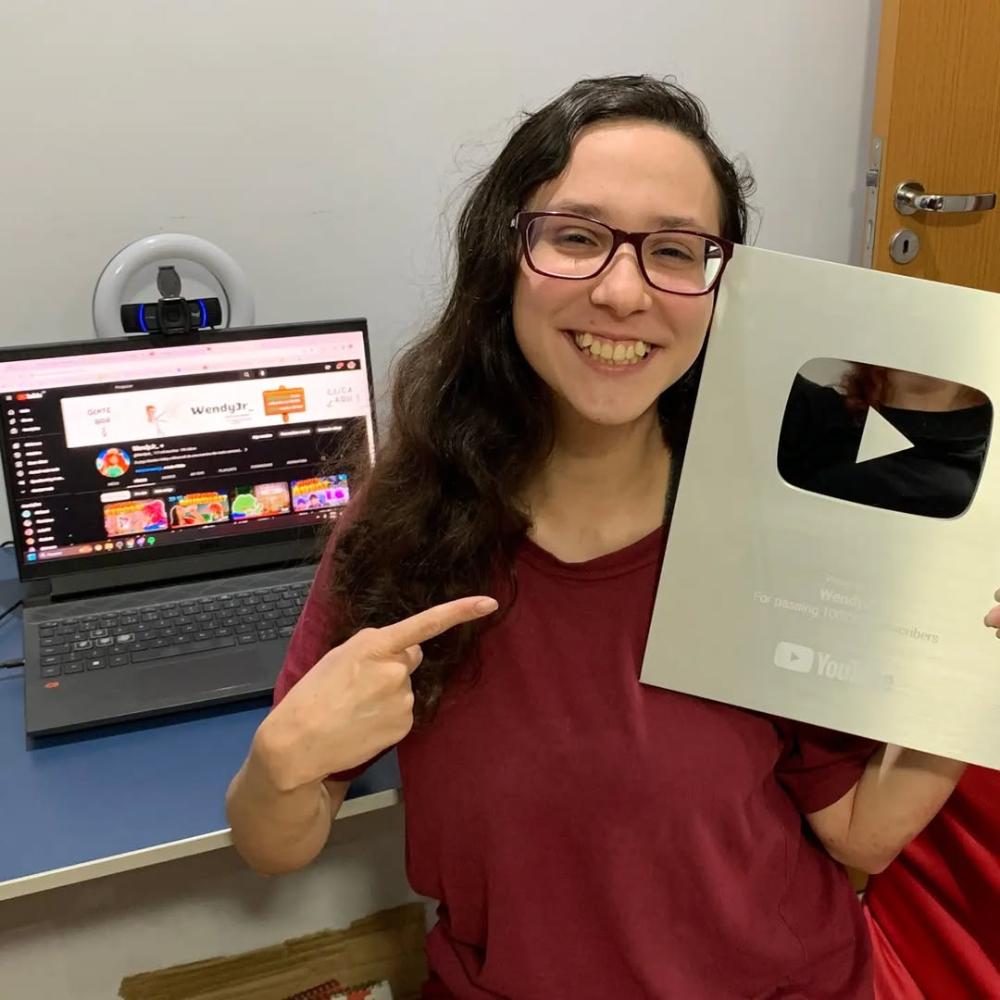
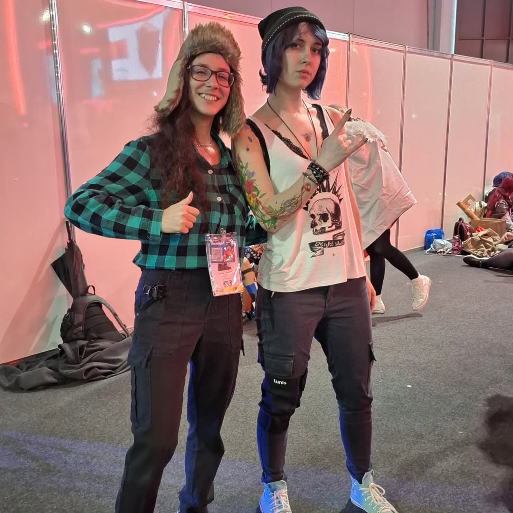
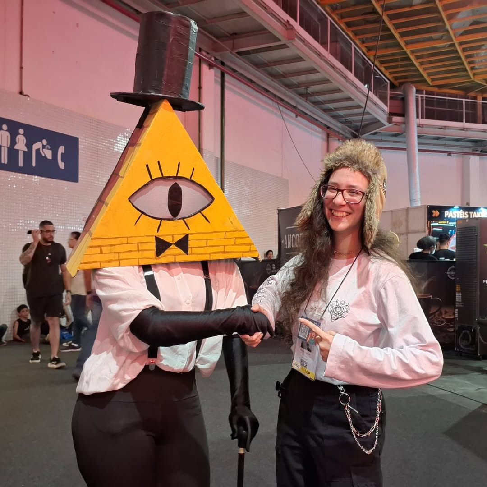
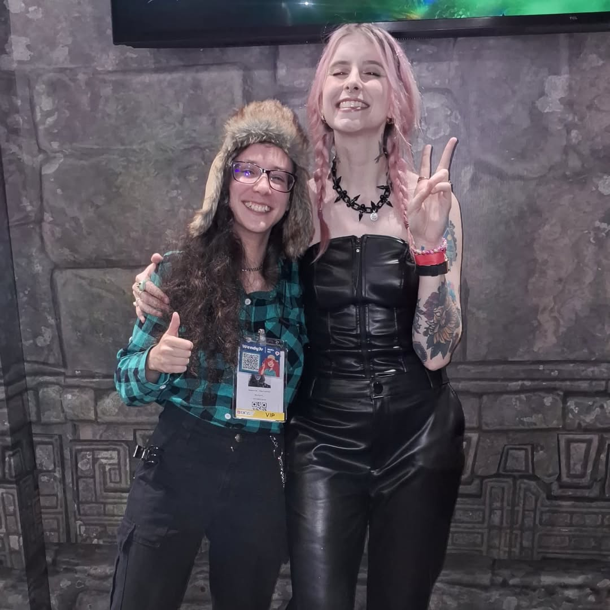
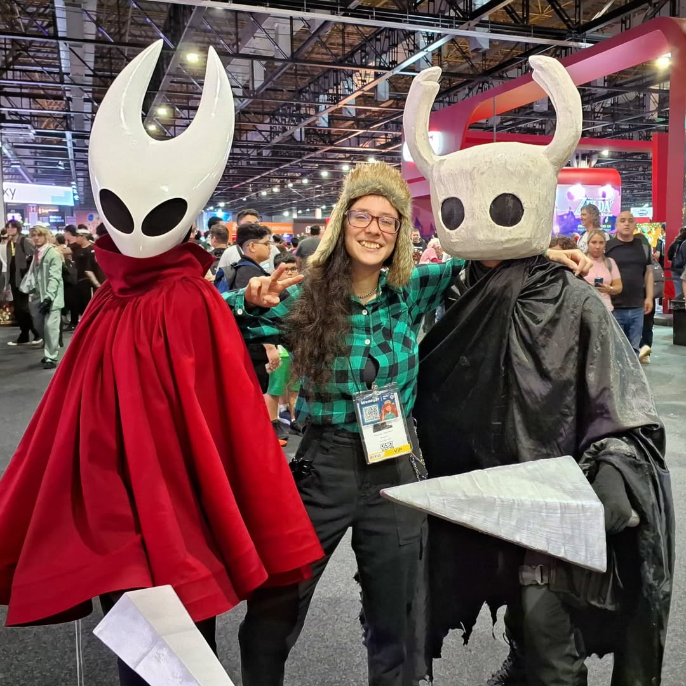
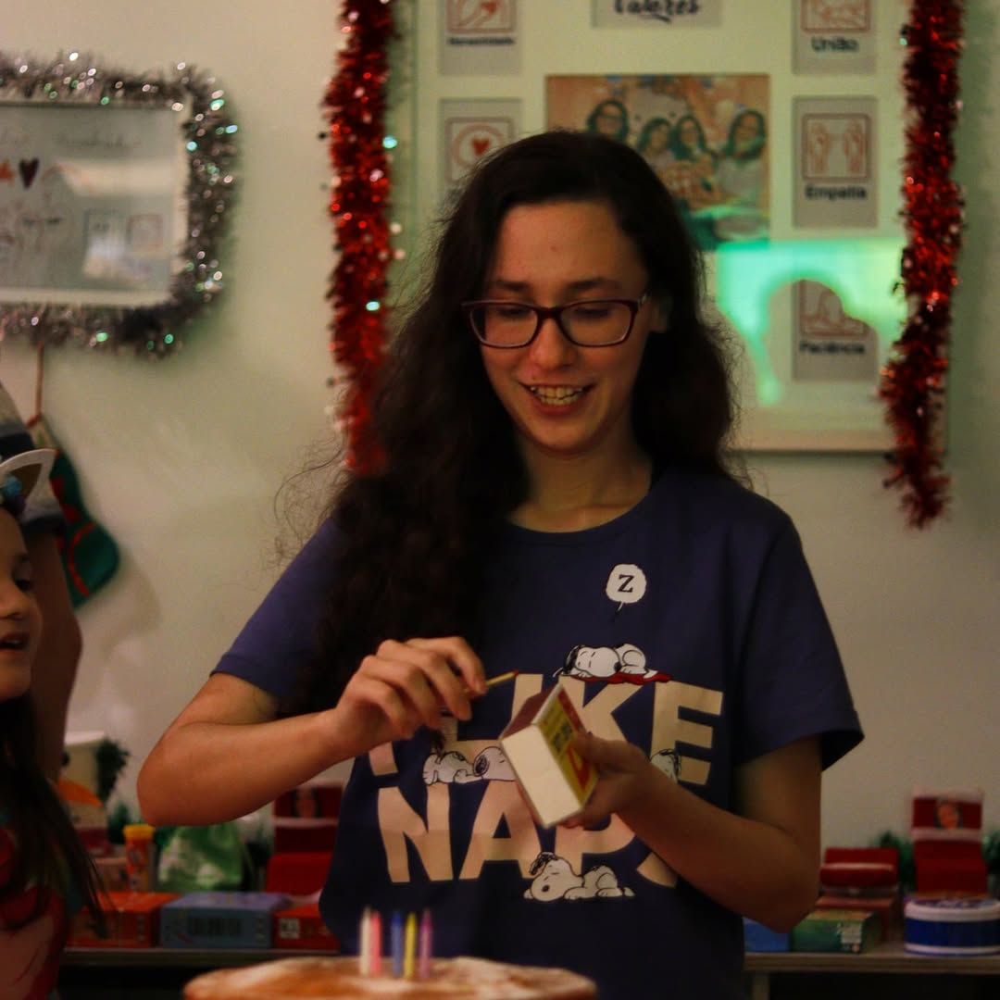
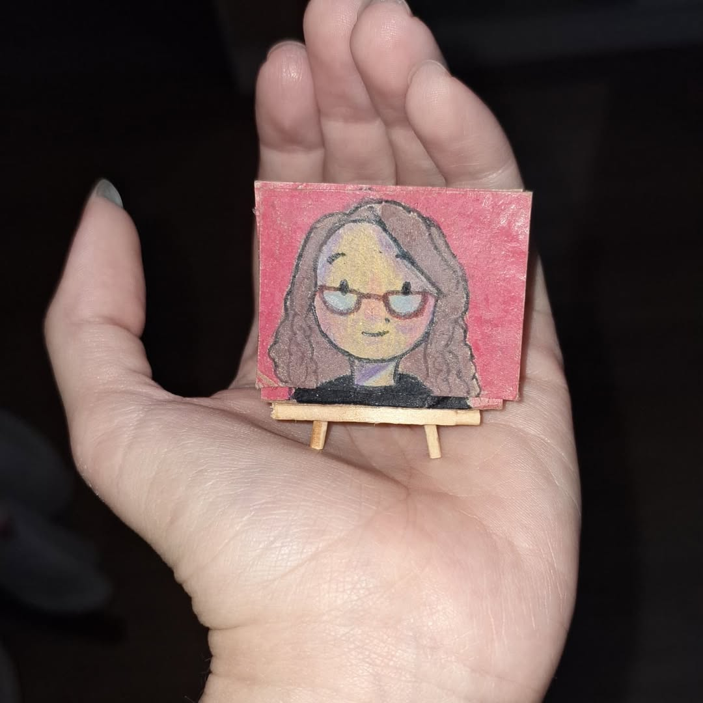

Amanda Japiassú mais conhecida como Wendyjr_ ou caloteira tem 20 anos
de idade atualmente em 2025, Streamer e Youtuber principalmente de
Stardew Valley e Speedruner de varios jogos entre eles: Hollow Knight,
Undertale, Stardew Valley, PvZ, Club Penguin, Pou, Etc.
Nasceu no Rio de Janeiro no dia 26/12/2004. Começou seu canal do
youtube no dia 08/06/2021, e da twitch no dia 08/05/2020


Canal do YouTube
WendyJr_ conta com mais de 483 mil inscritos no YouTube. Publica vídeos todo sábado às 11h e faz lives na Twitch todos os dias às 18:30.
Playlists do canal
- Speedruns e Desafios | Stardew Valley — 27 vídeos
- Dicas para Iniciantes | Stardew Valley — 11 vídeos
- 100 dias de Stardew Valley Expanded (+120 mods) — 16 vídeos
- Melhores Mods de Stardew Valley — 12 vídeos
- Minecraft — 13 vídeos
Vídeos recentes em destaque
- "CORRI Stardew Valley pelo Google Tradutor e Isso Aconteceu..." — 42K views
- "Zerei Silksong sem pegar (quase) NADA" — 39K views
- "Undertale, mas eu tenho uma ARMA…" — 68K views
- "Esta Brasileira QUASE levou TOP 1 em Speedrun de Hollow Knight" — 54K views
- "Hollow Knight, mas a GRAVIDADE MUDA a cada 1 minuto!" — 51K views
Colaborações
- Farizaku — "Desafiei o melhor speedrunner de Stardew Valley do Brasil" (78K views)
- Gustavo_07 — Speedrunner vs Pro Player de Silksong (94K views)
- Dillian — Torneio de Cuphead 1v1 (87K views)
Feitos
Stardew Valley: Conseguiu o Primeiro Lugar na Speedrun de
casamento com o
Shane,
Segundo Lugar com a
Abigail,
e Terceiro lugar com a
Emily.
Fez o
centro comunitario sem Ferramentas,
participou de um campeonato de
Stardew Valley,
Fez 100 dias no
expanded
Minecraft: Participou do MCC (MC Championship Rising 2) pelo time Green Geckos ao lado de Caramello, Calolinda e p_izzato, ficando em 10º lugar geral e 36º individual. Também fundou o Batateismo no minecraft.
Enigma do medo: Fez varias speedruns desse jogo e conseguiu Primeiro Lugar em derrotar o Calisto
Eventos ao vivo: Já tivemos de eventos especiais o Dia dos encalhados, WendyAwards, Festa Junina, Cosplay, Live cozinhando, 1 de abril e subathons
Rpg de mesa: Criou e mestrou uma campanha inteira de RPG
Curiosidades
- Ela namora a pastelitos
- Seu canal era para ser focado em LadyBug
- Tem varios videos recitando historias no canal de seu avô
- Tem duas irmãs
- Prende seus moderadores em seu porão e odeia seus vips
- Amava club penguin desde pequena
- Tem varios canais de diversos conteudos
- Ela tem todas as alergias
- Faz pilates com a sua Mâe
Galeria







